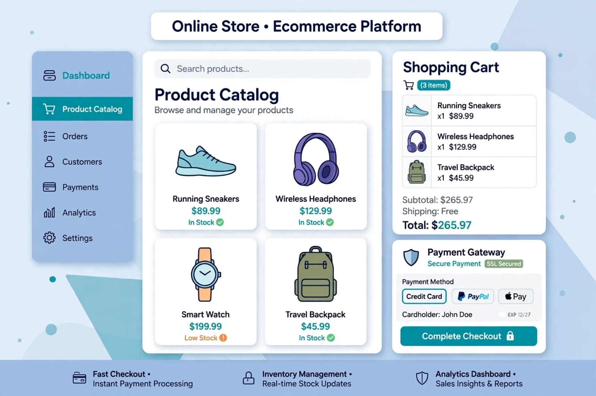

المعهد: معهد دلتا العالي للإدارة ونظم المعلومات
إعداد الطالب: Radwa Wissam Riyad Mahmoud
الرقم الجامعي: 2504151
العام الدراسي: 2026 - 2027
تشهد البشرية في العصر الحالي تحولاً جذرياً... تبرز التجارة الإلكترونية (E-Commerce) كواحدة من أهم الظواهر الاقتصادية المعاصرة.

ببساطة هي بيع وشراء وتبادل المنتجات أو الخدمات... لتنفيذ المعاملات عن طريق الإنترنت.
1) تطبيقات التسوق المباشر: مثل Amazon, Noon, Jumia
2) تطبيقات منصات التجارة: مثل Shopify, Salla, Zid
| المكون | الوصف | أمثلة |
|---|---|---|
| واجهة المستخدم UI/UX | تصميم جذاب | تصميم الواجهة، التجاوب مع الهواتف |
| كتالوج المنتجات | عرض منظم | قائمة المنتجات، أدوات البحث |
| سلة التسوق | إدارة الشراء | سلة التسوق، Checkout |
| بوابات الدفع والشحن | تأمين الدفع | أنظمة الدفع، خيارات الشحن |
| إدارة الحسابات | التحكم | لوحة التحكم، حساب العميل |
تُعتبر التجارة الإلكترونية اليوم إحدى أهم ركائز الاقتصاد الحديث...
• تعزيز أمن المعلومات
• تحسين البنية التحتية
• دعم الشركات الصغيرة
• توعية المستهلكين
• الاستثمار في التقنيات الحديثة